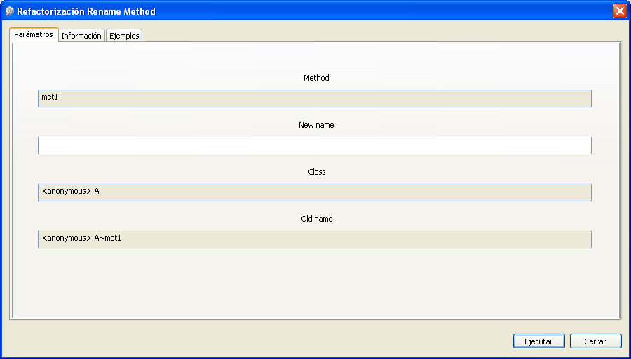

Ejecutar Refactorizaciones DinámicasEjecutar Refactorizaciones Dinámicas
Ejecutar Refactorizaciones DinámicasEjecutar Refactorizaciones DinámicasUna vez que se ha seleccionado la refactorización dinámica que se quiere ejecutar, se abrirá un nuevo diálogo. En este diálogo habrá de configurarse la refactorización antes de su ejecución.
Se trata de un diálogo generado de forma dinámica, lo que significa que contendrá un conjunto diferente de parámetros configurables dependiendo de la refactorización seleccionada.
Verá que aparecen dos o tres pestañas en la parte superior: una asignada a los parámetros que se deben configurar antes de poder ejecutar la refactorización, otra con un breve resumen de la refactorización que se está configurando y su estructura, y la tercera contendrá los ejemplos asociados a la refactorización. Esta última pestaña solo aparecerá en caso de que la refactorización tenga asociado algún ejemplo.
El diálogo debería ser similar al que se muestra a continuación, que corresponde a la refactorización "Renombrar Método":

Se debe configurar un valor para todos los campos vacíos de la ventana antes de pulsar el botón
Run para iniciar la refactorización. Si no se ha hecho así, se abrirá un mensaje de aviso.
Una vez que se ejecute la refactorización, los valores configurados podrían conducir al fallo de alguna de las precondiciones, lo que indicaría que la refactorización no puede ejecutarse correctamente con esas entradas. En esos casos, se mostrará un mensaje de error y se cancelará el proceso de refactorización.
El mensaje mostrado contendrá información relativa a la precondición que no se cumplió y a las posibles causas por los que esto sucedió.
Si, por ejemplo, se intenta renombrar un método constructor de una clase Java, se obtendría un mensaje como el siguiente:
Error: excepción de precondición
Si es una postcondición la que falla después de que se haya completado la ejecución de acciones de la refactorización, se mostrará un mensaje de error similar, que contendrá algunos detalles acerca del motivo por el que falló la postcondición. En tal caso, la refactorización se deshará automáticamente para intentar preservar la corrección. Este proceso podría no ser completamente exacto en algunas refactorizaciones complejas.
Si el error ocurre durant el proceso de refactorización en sí, daría lugar a otro mensaje de error y las acciones ejecutadas hasta el momento se desharían igualmente.
Cuando la refactorización finaliza, la vista Progreso se actualiza con los datos relativos
al proceso de refactorización y a las acciones de más bajo nivel que ha ejecutado la refactorización.
La vista Historial de Refactorización también se actualiza. Esta vista muestra la hora
y fecha en que se completaron cada una de las refactorizaciones, así como su nombre. Se puede utilizar esta
vista para deshacer cualquiera de las refactorizaciones ejecutadas.